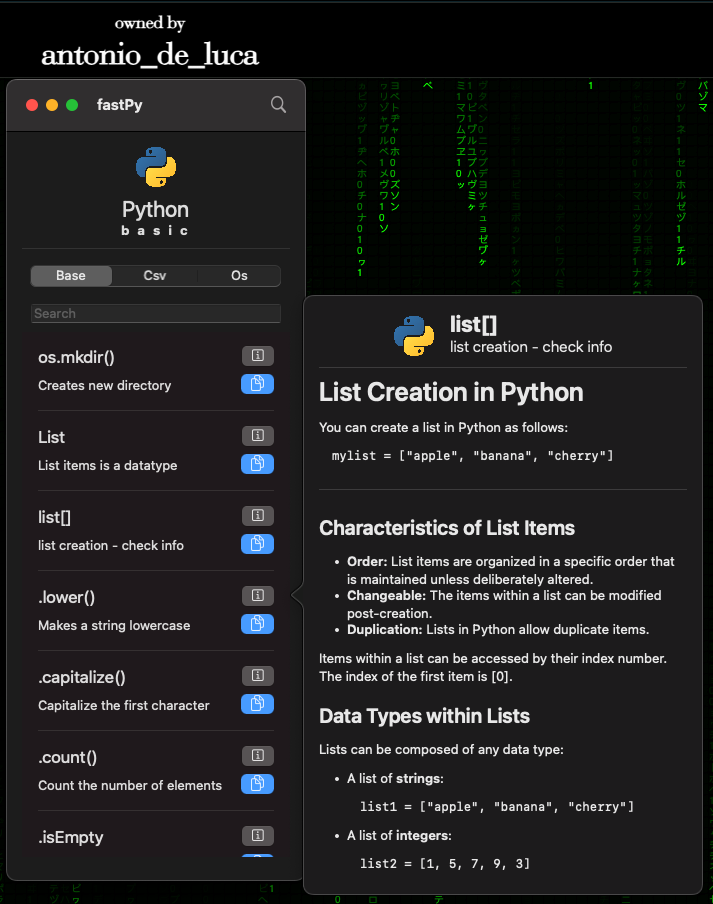
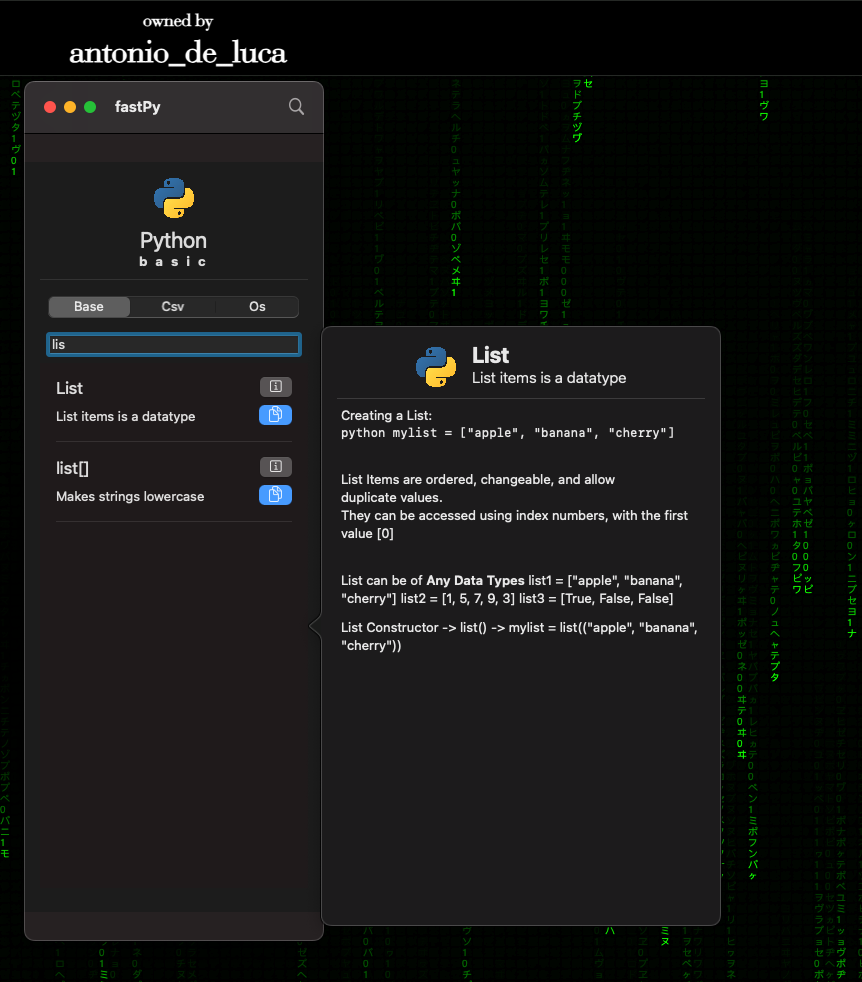

antonios_project
Python Key Words

What is PyKeeWo
Python Key Words is an app made for MacOS principally, the project is born simply because I needed to learn commands for the kata on code wars and leet code
I know it is possible to look commands up on Google but it takes many more actions, as well as asking to ChatGPT
So I created this small tool that goes on one side of screen and has a system icon function, when is on rest.
The app is uses SwiftUI mainly which regulates the UI, unfortunately Swift for Mac is not developed as good as on iOS meaning that some functionalities hare in UIkit,
In fact, the popOver functionality is in reality a simple UIkit implementation. It is possible to make a research which scouts for the right command and if a better example is needed the button info opens it.
Very fast, for now there is python basic, CSV (which is my archenemy) and os which I used to make script to order my Mac that is super messy.

